Multivariate SWG: Application to crop model
import Pkg;This tutorial has two objectives
- Train a multivariate multisite (simplistic) model, reusing the hidden states trained in the other tutorial.
- How to use this SWG with a crop model to generate annual crop yield for maize.
In the first part, the tutorial shows how to easily train weather stations given the hidden states sequence z obtained in the previous tutorial. We will show how to make a (simplistic) multisite SWG with multiple correlated weather variables such as daily Rain RR ($\mathrm{m}\mathrm{m}$), daily Temperature minimum TN (°C), maximum TX (°C), total daily solar irradiance QQ (MJ/$\mathrm{m}^2$) and daily evapotranspiration Penman ETPP ($\mathrm{m}\mathrm{m}/\mathrm{m}^2$). This model will be trained with respect to the given hidden states, and the parameters will be periodic and vary smoothly during a calendar year.
The hidden states and the seasonality are enough to correlate well the weather variables without extra codependency between simulated variables.
This multisite, multivariable model has been used as input of the STIC crop model to generate data of annual crop yield for maize in the GenHack 3 Hackathon. See the associated published dataset https://doi.org/10.57745/C3FNBY. In the second part, we show what steps to follow to generate a similar dataset.
The GIF below illustrates a 50 years generated multivariate weather times series at one site with the associated yearly maize[Error]. The code to produce this GIF is at the end of this tutorial. The vertical dashed lines show a key period of the year for maize growth with respect to precipitation. This key period is identified in the Sensitivity Analysis section of this tutorial.

Set up
Package and functions
using CSV, DelimitedFiles# File Read/Load/Save/dwl
import JLD# File Read/Load/Save/dwl
import Downloads
using DataFrames, DataFramesMeta # DataFrames
using Dates
using Random, Distributions
using LaTeXStrings
using StatsBaseThe main package is StochasticWeatherGenerators.jl, which provides the interface to the models and data. SmoothPeriodicStatsModels.jl contains the smooth periodic models (fit and sampling methods) used in this tutorial, namely the Seasonal Hidden Markov Model (SHMM), the seasonal AR(1) model, and the seasonal mixture models for rainfall amounts.
using StochasticWeatherGenerators
using SmoothPeriodicStatsModelsSince SmoothPeriodicStatsModels.jl v3 all the fitting code lives in a package extension: the models and rand are always available, while fit_mle and friends – and hence fit_mle_RO, fit_mle_RR, fit_AR1 and fit_TN here – are only defined once the SciML solver stack below is loaded: Optimization and SimpleNonlinearSolve are the extension trigger. Every fit then takes its optimization algorithm explicitly as solver, here LBFGS from OptimizationOptimJL.
using Optimization, SimpleNonlinearSolve # load the fitting routines
using OptimizationOptimJL # the optimization algorithm, LBFGS
solver = LBFGS() # every fit below takes its optimization algorithm explicitlyOptim.LBFGS{Nothing, LineSearches.InitialStatic{Float64}, LineSearches.HagerZhang{Float64, Base.RefValue{Bool}}, Returns{Nothing}}(10, LineSearches.InitialStatic{Float64}(1.0, false), LineSearches.HagerZhang{Float64, Base.RefValue{Bool}}(0.1, 0.9, Inf, 5.0, 1.0e-6, 0.6666666666666666, 50, 0.1, 0, Base.RefValue{Bool}(false), nothing, false), nothing, Returns{Nothing}(nothing), Optim.Flat(), true)Data extraction and settings
To get the interesting weather variables, we use weather station provided by a the French research institute for agronomy and environment (INRAE). This data is available through the INRAE CLIMATIK platform[climatik] (https://agroclim.inrae.fr/climatik/, in French) managed by the AgroClim laboratory of Avignon, France. Unfortunately, these data are not yet open access (they should be soon). Météo France do have a version of this data and it is accessible through an API on the website Data.Gouv.fr. This package provide a simple command to extract the data of one station (given its STAtionID) from the API.
# Download the four stations used in this tutorial from MeteoFrance collection
dfs = collect_data_MeteoFrance.([49215002, 80557001, 40272002, 63345002])See the Data section of the documentation section.
However, the data there does not exactly match the available on CLIMATIK, (less data, different values ...). For now I stored the CLIMATIK data on a private repo until the Météo France data is fixed.
While testing this function, it appears that MeteoFrance API might bug sometimes returning an error for some stations (and working for others). In that case, you can check the API directly here.
local_order = 1
memory_order = 2^local_order
K = 4
degree = 1
T = 366366Weather stations
We select four INRAE weather stations Montreuil-Bellay, Mons-en-Chaussée, Saint-Martin-de-Hinx and Saint-Gènes-Champanelle. Note that these are not the training stations used in the paper tutorial, however we will still use the weather regime trained there. The rain occurrence generation will be conditionally independent to this weather regime across all these four stations.
Station French department number.
station_dep = [49, 80, 40, 63]
station_name = ["Montreuil-Bellay", "Mons-en-Chaussée", "Saint-Martin-de-Hinx", "Saint-Gènes-Champanelle"]
station_gps = [(LAT=47.13, LON=-0.1415), (LAT=49.875, LON=3.031), (LAT=43.5708, LON=-1.29933), (LAT=45.723, LON=3.019)]
D = length(station_name)
station_path = string.("https://forgemia.inra.fr/david.metivier/weather_data_mistea/-/raw/main/INRAE_stations/INRAE_STATION_", [49215002, 80557001, 40272002, 63345002], ".csv") .|> download
station_ndep = string.(station_name, " (", station_dep, ")")4-element Vector{String}:
"Montreuil-Bellay (49)"
"Mons-en-Chaussée (80)"
"Saint-Martin-de-Hinx (40)"
"Saint-Gènes-Champanelle (63)"Load pre-trained hidden states and station data
Load the AutoRegressive Seasonal HMM computed in this tutorial.
file_hmm = download("https://raw.githubusercontent.com/dmetivie/StochasticWeatherGenerators.jl/refs/heads/master/assets/tuto_1/hmm_fit_K_4_d_1_m_1.jld")
begin
hmm_ind_infos = JLD.load(joinpath(pkgdir(StochasticWeatherGenerators), "assets", "tuto_1", "hmm_fit_K_4_d_1_m_1.jld"))
hmm_fit_full = hmm_ind_infos["hmm"]
θq_fit = hmm_ind_infos["Q_param"]
end4×3×3 Array{Float64, 3}:
[:, :, 1] =
2.27287 1.61791 1.09247
0.047264 0.845656 -1.02341
-0.352188 -0.537942 0.725081
-2.86711 -1.38575 -2.01317
[:, :, 2] =
0.239175 -0.214254 0.200498
0.408978 0.148962 0.203501
0.377251 0.148114 0.28492
0.164178 0.0208895 -0.13681
[:, :, 3] =
0.283683 0.0230918 0.107845
0.0602381 -0.01249 0.103605
-0.0774946 -0.145427 0.0673092
0.315783 0.0398954 0.0329445Load the sequence of estimated hidden states for the historical sequence.
df_z = CSV.read(joinpath(pkgdir(StochasticWeatherGenerators), "assets", "tuto_1", "z_hat_K_4_d_1_m_1.csv"), DataFrame)
df_z[1:10, :] # Show the first lines of the dataframes| Row | DATE | z |
|---|---|---|
| Date | Int64 | |
| 1 | 1956-01-01 | 1 |
| 2 | 1956-01-02 | 2 |
| 3 | 1956-01-03 | 4 |
| 4 | 1956-01-04 | 4 |
| 5 | 1956-01-05 | 4 |
| 6 | 1956-01-06 | 3 |
| 7 | 1956-01-07 | 1 |
| 8 | 1956-01-08 | 1 |
| 9 | 1956-01-09 | 3 |
| 10 | 1956-01-10 | 2 |
Load and filter the data by date. There are a few missing values that we impute using Impute.Interpolate.
begin
data_stations_full = collect_data_INRAE.(station_path; show_warning=[:RR, :TX], impute_missing=[:RR, :TX])
for df in data_stations_full
@transform!(df, :RO = onefy.(:RR))
end
end
data_stations = [innerjoin(df, df_z; on=:DATE) for df in data_stations_full]4-element Vector{DataFrames.DataFrame}:
12418×10 DataFrame
Row │ STAID DATE TN TX QQ ETPP RR ⋯
│ Int64 Date Float64? Float64 Float64? Float64? Float64 ⋯
───────┼────────────────────────────────────────────────────────────────────────
1 │ 49215002 1986-01-01 -5.7 8.7 2.0 0.9 13.6 ⋯
2 │ 49215002 1986-01-02 3.5 8.8 3.0 0.1 14.1
3 │ 49215002 1986-01-03 5.4 7.6 2.0 0.5 1.0
4 │ 49215002 1986-01-04 -2.9 6.8 6.1 0.0 6.0
5 │ 49215002 1986-01-05 2.6 7.5 3.4 1.4 14.0 ⋯
6 │ 49215002 1986-01-06 2.2 8.1 6.0 0.4 5.0
7 │ 49215002 1986-01-07 3.4 7.6 1.9 0.0 8.0
8 │ 49215002 1986-01-08 4.6 10.8 5.7 0.0 0.0
⋮ │ ⋮ ⋮ ⋮ ⋮ ⋮ ⋮ ⋮ ⋱
12412 │ 49215002 2019-12-25 6.4 8.3 2.0 0.1 0.0 ⋯
12413 │ 49215002 2019-12-26 4.6 13.6 3.76 0.1 0.0
12414 │ 49215002 2019-12-27 10.3 13.6 2.0 0.5 1.0
12415 │ 49215002 2019-12-28 5.6 11.0 5.01 0.0 0.5
12416 │ 49215002 2019-12-29 0.1 8.4 4.5 0.0 0.0 ⋯
12417 │ 49215002 2019-12-30 -1.8 8.2 6.71 0.0 0.0
12418 │ 49215002 2019-12-31 -2.4 6.6 3.02 0.0 0.5
3 columns and 12403 rows omitted
12449×10 DataFrame
Row │ STAID DATE TN TX QQ ETPP RR ⋯
│ Int64 Date Float64? Float64 Float64? Float64? Float64 ⋯
───────┼────────────────────────────────────────────────────────────────────────
1 │ 80557001 1985-12-01 7.5 13.5 4.1 0.2 0.0 ⋯
2 │ 80557001 1985-12-02 8.1 13.1 2.1 0.5 0.0
3 │ 80557001 1985-12-03 10.0 12.0 0.7 0.1 2.0
4 │ 80557001 1985-12-04 10.0 13.7 2.7 0.2 0.5
5 │ 80557001 1985-12-05 9.1 14.6 3.1 0.7 0.5 ⋯
6 │ 80557001 1985-12-06 5.5 10.6 3.6 0.4 2.5
7 │ 80557001 1985-12-07 8.2 11.6 1.3 0.4 1.5
8 │ 80557001 1985-12-08 2.9 8.6 1.4 0.4 1.5
⋮ │ ⋮ ⋮ ⋮ ⋮ ⋮ ⋮ ⋮ ⋱
12443 │ 80557001 2019-12-25 5.6 9.1 3.29 0.1 0.0 ⋯
12444 │ 80557001 2019-12-26 1.9 10.1 1.2 0.3 10.0
12445 │ 80557001 2019-12-27 7.3 8.5 1.07 0.2 0.0
12446 │ 80557001 2019-12-28 3.3 7.4 3.07 0.0 0.0
12447 │ 80557001 2019-12-29 -0.7 4.2 4.6 0.0 0.0 ⋯
12448 │ 80557001 2019-12-30 -1.0 5.7 5.24 0.0 0.0
12449 │ 80557001 2019-12-31 -1.3 3.9 4.76 0.0 0.0
3 columns and 12434 rows omitted
9845×10 DataFrame
Row │ STAID DATE TN TX QQ ETPP RR ⋯
│ Int64 Date Float64? Float64 Float64? Float64? Float64 ⋯
──────┼─────────────────────────────────────────────────────────────────────────
1 │ 40272002 1993-01-17 19.0 20.6 0.0 0.5 0.0 ⋯
2 │ 40272002 1993-01-18 16.7 19.4 0.0 0.5 0.0
3 │ 40272002 1993-01-19 7.9 16.0 0.7 0.5 15.0
4 │ 40272002 1993-01-20 -0.9 16.7 7.4 0.5 0.0
5 │ 40272002 1993-01-21 -0.6 15.9 7.7 0.5 0.0 ⋯
6 │ 40272002 1993-01-22 -1.2 17.7 7.8 0.5 0.0
7 │ 40272002 1993-01-23 0.2 16.0 6.3 0.6 0.0
8 │ 40272002 1993-01-24 -0.7 13.6 6.1 0.4 0.5
⋮ │ ⋮ ⋮ ⋮ ⋮ ⋮ ⋮ ⋮ ⋱
9839 │ 40272002 2019-12-25 6.7 19.3 6.46 0.1 0.0 ⋯
9840 │ 40272002 2019-12-26 7.3 15.7 5.29 0.3 0.0
9841 │ 40272002 2019-12-27 0.6 14.2 6.65 0.0 0.5
9842 │ 40272002 2019-12-28 5.3 10.7 2.32 0.2 0.0
9843 │ 40272002 2019-12-29 4.0 6.4 2.64 0.1 0.0 ⋯
9844 │ 40272002 2019-12-30 1.6 13.4 6.65 0.1 0.0
9845 │ 40272002 2019-12-31 -0.4 11.7 2.15 0.2 0.5
3 columns and 9830 rows omitted
12449×10 DataFrame
Row │ STAID DATE TN TX QQ ETPP RR ⋯
│ Int64 Date Float64? Float64 Float64? Float64? Float64 ⋯
───────┼────────────────────────────────────────────────────────────────────────
1 │ 63345002 1985-12-01 2.9 13.5 6.9 0.1 0.0 ⋯
2 │ 63345002 1985-12-02 4.5 16.7 6.5 0.3 0.0
3 │ 63345002 1985-12-03 6.6 21.1 5.6 1.4 0.0
4 │ 63345002 1985-12-04 7.8 15.8 4.4 1.1 0.0
5 │ 63345002 1985-12-05 3.8 12.2 6.6 0.7 0.0 ⋯
6 │ 63345002 1985-12-06 4.1 6.4 3.9 0.4 0.0
7 │ 63345002 1985-12-07 3.3 7.9 1.8 0.3 0.0
8 │ 63345002 1985-12-08 3.1 8.1 2.4 0.4 0.0
⋮ │ ⋮ ⋮ ⋮ ⋮ ⋮ ⋮ ⋮ ⋱
12443 │ 63345002 2019-12-25 -0.1 10.0 6.54 0.0 0.0 ⋯
12444 │ 63345002 2019-12-26 -1.7 10.2 4.13 0.7 0.0
12445 │ 63345002 2019-12-27 4.4 7.9 2.72 0.5 8.5
12446 │ 63345002 2019-12-28 2.0 4.5 3.07 0.1 0.0
12447 │ 63345002 2019-12-29 -2.6 12.2 7.01 0.2 0.0 ⋯
12448 │ 63345002 2019-12-30 0.4 14.3 6.73 0.4 0.0
12449 │ 63345002 2019-12-31 -0.7 12.9 6.53 0.2 0.0
3 columns and 12434 rows omittedWe compute the mean temperature during the growth month of maize (May to September) at each location.
mean_summer_TX = round.([@combine(@subset(df, month.(:DATE) .∈ tuple([5, 6, 7, 8, 9])), :meanTX=mean(:TX))[1, 1] for df in data_stations_full], digits=1)4-element Vector{Float64}:
24.2
21.8
24.8
19.7Plots are made with Makie.jl and its CairoMakie backend. Loading Makie defines the plot functions of StochasticWeatherGenerators.jl (errorline, errorlinehist, ...). Loading GeoMakie.jl and NaturalEarth.jl as well defines map_with_stations to plot maps. The theme sets the LaTeX fonts and the font size of every figure. Each figure is then sized by the width and height of its axes.
using CairoMakie, GeoMakie, NaturalEarth
plots_colors = [RGBf(0.0, 0.606, 0.979), RGBf(0.889, 0.436, 0.278), RGBf(0.242, 0.643, 0.304), RGBf(0.764, 0.444, 0.824),
RGBf(0.676, 0.556, 0.094), RGBf(0.0, 0.666, 0.681), RGBf(0.931, 0.367, 0.576), RGBf(0.777, 0.51, 0.146)] # Plots.jl default colors
set_theme!(theme_latexfonts(); fontsize=16, palette=(color=plots_colors,))
FR_map = map_with_stations(last.(station_gps), first.(station_gps), mean_summer_TX; station_name=station_ndep, show_value=true, colorbar_show=true, precision_scale=50, colorbar_label="°C")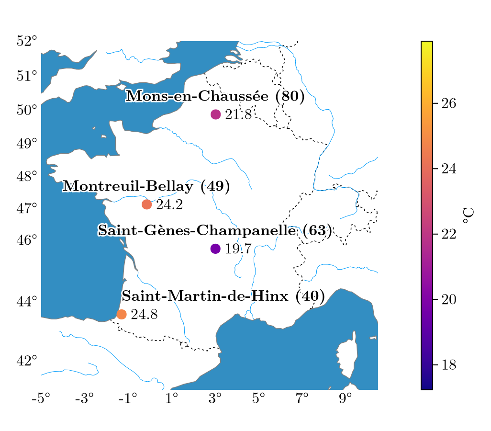
Fitting the multivariate multisite model
We now fit the observed weather variables to seasonal models with respect to the hidden variables i.e. the models we fit depend continuously on the day of the year $t\in [1,366]$ and on the provided hidden state $Z \in [1,K]$.
Rain Occurrences
Fit the Rain Occurrences of INRAE stations with respect to the given hidden states sequence. These distributions are then cast into the HMM emission distribution. The pre-trained transitons matrices Qₜ are kept the same. We could have added these new emission distributions to the existing one, however here we focus only on these four stations.
θ = zeros(K, D, memory_order, 2degree + 1)
B = Array{Bernoulli}(undef, K, T, D, memory_order)
@time "Fit RO" for (j, df) in enumerate(data_stations)
B[:, :, j, :], θ[:, j, :, :] = fit_mle_RO(df, local_order, degree; solver)
end
θy_fit = θ #
a = zeros(K)
a[data_stations[1].z[1]] = 1.0 # Initial state of the HMM
hmm_fit = ARPeriodicHMM(a, hmm_fit_full.A, B)ARPeriodicHMM{Univariate, Float64, Array{Bernoulli, 4}}([1.0, 0.0, 0.0, 0.0], [0.5868668411430006 0.192867133312565 0.17289938702676547 0.047366638517669805; 0.2759747886634278 0.4722340200070956 0.07708716898400873 0.1747040223454688; 0.18794832960472785 0.1239828907579878 0.5045183075174593 0.18355047211982592; 0.0468012029160368 0.17755340771262873 0.08096831923493193 0.6946770701364035;;; 0.5877868260030591 0.19234608218013702 0.17265160723475137 0.047215484582053456; 0.27614582756129125 0.4719915408328747 0.07719938346830034 0.17466324813753456; 0.18768201959339845 0.12367549004575931 0.5050775688094423 0.1835649215514009; 0.04703227663366836 0.17759850455121984 0.08098486898907001 0.6943843498260426;;; 0.5886873344135768 0.19184574731811582 0.1724003270920905 0.04706659117621767; 0.27629965757394104 0.47175609903420374 0.07731156150430794 0.17463268188754827; 0.1874079465560405 0.12337190361259766 0.5056284972217102 0.18359165260965254; 0.04726201157058304 0.17764228564009218 0.08100458500464326 0.6940911177846824;;; … ;;; 0.5839921992656159 0.1945541429637786 0.17362038373477956 0.04783327403582708; 0.27535913815814855 0.4730028145996247 0.07675060185504819 0.17488744538717943; 0.1886995359360734 0.124927287578331 0.5027923866416495 0.18358078984394705; 0.04610091658156608 0.17741031766959195 0.08093767129318795 0.6955510944556549;;; 0.5849693067385975 0.19397121030872616 0.17338390954448354 0.047675573408193825; 0.27558136520453486 0.47273974782035383 0.0768627491742627 0.1748161378008496; 0.1884571998203258 0.124608860428939 0.5033755294770161 0.18355841027371997; 0.04633542671053157 0.17745930424278922 0.0809447205171165 0.6952605485295636;;; 0.5859275950283465 0.19340885779967384 0.17314353252790696 0.04752001464407374; 0.275786609422582 0.4724834519481363 0.0769749478018675 0.1747549908274152; 0.1882067607882785 0.12429403755198946 0.5039508989019674 0.18354830275776557; 0.04656888744740613 0.177507004355618 0.08095493637040815 0.6949691718265686], Bernoulli[Bernoulli(0.9114349905668628) Bernoulli(0.9112922227775377) … Bernoulli(0.9116527083454321) Bernoulli(0.9115551366651595); Bernoulli(0.530355095377873) Bernoulli(0.5297718795378965) … Bernoulli(0.5314536105023453) Bernoulli(0.5309157247935152); Bernoulli(0.3759328543830122) Bernoulli(0.3752646381086994) … Bernoulli(0.3771529687665152) Bernoulli(0.3765623864439624); Bernoulli(0.15100146048443222) Bernoulli(0.1505457512472709) … Bernoulli(0.1518271693513325) Bernoulli(0.15142871022929252);;; Bernoulli(0.780044265923977) Bernoulli(0.7797646619974554) … Bernoulli(0.7805789168871433) Bernoulli(0.7803157038374886); Bernoulli(0.6790258003829397) Bernoulli(0.6788771495161827) … Bernoulli(0.6792805302438781) Bernoulli(0.6791602707099338); Bernoulli(0.13043679217575394) Bernoulli(0.12967758807395938) … Bernoulli(0.13196995315716453) Bernoulli(0.13120097986052642); Bernoulli(0.12576150835529384) Bernoulli(0.1245285908775691) … Bernoulli(0.12822440436847699) Bernoulli(0.12699364461495954);;; Bernoulli(0.7726526902101267) Bernoulli(0.7730694552234918) … Bernoulli(0.7717979836212671) Bernoulli(0.7722288331806197); Bernoulli(0.30703958620015265) Bernoulli(0.3061631697190538) … Bernoulli(0.30881795687255953) Bernoulli(0.3079245923104382); Bernoulli(0.5580165648030219) Bernoulli(0.5585037540856628) … Bernoulli(0.5569999336999668) Bernoulli(0.557515245036123); Bernoulli(0.18581502417248236) Bernoulli(0.18515837773887883) … Bernoulli(0.18712908012361135) Bernoulli(0.18647199339726672);;; Bernoulli(0.6991690180383354) Bernoulli(0.6994675898323568) … Bernoulli(0.6987069677237451) Bernoulli(0.698915430714677); Bernoulli(0.3610965481499238) Bernoulli(0.36112777213667735) … Bernoulli(0.36108008369609906) Bernoulli(0.3610806507347767); Bernoulli(0.3181915765469428) Bernoulli(0.31899709611086) … Bernoulli(0.31668094627091614) Bernoulli(0.3174194919199114); Bernoulli(0.07318304065493358) Bernoulli(0.07275954854261937) … Bernoulli(0.07406022588589979) Bernoulli(0.07361659695151752);;;; Bernoulli(0.8749201681304504) Bernoulli(0.8751807114124132) … Bernoulli(0.8743658445945093) Bernoulli(0.8746485390116652); Bernoulli(0.6318069097790745) Bernoulli(0.6316468839458405) … Bernoulli(0.6320921840184521) Bernoulli(0.631955355779229); Bernoulli(0.47614525021310694) Bernoulli(0.4765516524984501) … Bernoulli(0.4752788885572089) Bernoulli(0.47572095221876026); Bernoulli(0.21384039857529616) Bernoulli(0.2134932120902417) … Bernoulli(0.21449754193197046) Bernoulli(0.21417522267382913);;; Bernoulli(0.8855381689733) Bernoulli(0.8855994326923786) … Bernoulli(0.8853789246597518) Bernoulli(0.885464665897338); Bernoulli(0.7262791925442881) Bernoulli(0.7262049366779119) … Bernoulli(0.7264231979776239) Bernoulli(0.7263519532117039); Bernoulli(0.28134109201394714) Bernoulli(0.2817276962300053) … Bernoulli(0.2805729977370956) Bernoulli(0.2809561557721054); Bernoulli(0.2128168512446757) Bernoulli(0.21226880534947934) … Bernoulli(0.2139134924709672) Bernoulli(0.21336513579573402);;; Bernoulli(0.8705672185111925) Bernoulli(0.8708100922021759) … Bernoulli(0.870067460409681) Bernoulli(0.8703196573160845); Bernoulli(0.616740133172086) Bernoulli(0.6169445406189638) … Bernoulli(0.616301339243685) Bernoulli(0.6165257137280173); Bernoulli(0.7507401976115511) Bernoulli(0.7517108100819331) … Bernoulli(0.7487418021913033) Bernoulli(0.7497504733303674); Bernoulli(0.3351287130155163) Bernoulli(0.3357203475272093) … Bernoulli(0.3339011660199669) Bernoulli(0.3345222453660535);;; Bernoulli(0.8953214480014949) Bernoulli(0.8955404277701849) … Bernoulli(0.8948863178651112) Bernoulli(0.8951033876265083); Bernoulli(0.5917565119575767) Bernoulli(0.5918763794872004) … Bernoulli(0.5915356844932899) Bernoulli(0.5916429352539382); Bernoulli(0.6153019573553102) Bernoulli(0.6157963173798143) … Bernoulli(0.6143520886592143) Bernoulli(0.6148204940281926); Bernoulli(0.35625130965730134) Bernoulli(0.35559515833999716) … Bernoulli(0.35752865199580613) Bernoulli(0.35689588133964617)])Rainfall amounts
Here for simplicity we select the double exponential model for the Rainfall amount. We aim for a generic interface where one could easily change this choice to other univariate distribution e.g. mix₀ = MixtureModel([Exponential(1), Gamma(1,2)], [1/2,1/2]) or mix₀ = Pareto(1). For now this is not supported (because of the seasonal fit).
@time "Fit Rainfall amounts" mix_allE = fit_mle_RR.(data_stations, local_order; solver, mix₀=StochasticWeatherGenerators.mix_ini(T));Fit Rainfall amounts: 58.512203 seconds (29.35 M allocations: 2.665 GiB, 0.55% gc time, 10.76% compilation time: 4% of which was recompilation)The Gaussian copula covariance matrices are then estimated.
Σ²RR = cov_RR(data_stations, K)4-element Vector{Matrix{Float64}}:
[31.76415957843173 6.844726152914493 5.566374230877233 5.894147720497379; 6.844726152914493 30.671740091699586 1.6051317713619329 4.122138695924489; 5.566374230877233 1.6051317713619329 133.83512052388917 11.38371098788533; 5.894147720497379 4.122138695924489 11.38371098788533 60.84843886399006]
[18.814522481337494 4.499677821682111 3.218040160985254 3.6981648899561517; 4.499677821682111 21.924109242248473 -0.5112451865357651 3.29411091932108; 3.218040160985254 -0.5112451865357651 57.20484223034485 7.0741224740724675; 3.6981648899561517 3.29411091932108 7.0741224740724675 28.4748198971268]
[22.526397523231637 0.11751293460188919 3.8806035837705375 6.103057015755162; 0.11751293460188919 10.383559603648605 -0.03334966631737587 -1.294316078229749; 3.8806035837705375 -0.03334966631737587 125.2955119008292 9.147986986520573; 6.103057015755162 -1.294316078229749 9.147986986520573 47.19469913508749]
[17.71913430653424 1.3398724527144155 9.253376683896645 5.046150952980409; 1.3398724527144155 14.265975889201796 -0.3526574216776574 1.1626051507143806; 9.253376683896645 -0.3526574216776574 42.60506798496414 3.0376039948202544; 5.046150952980409 1.1626051507143806 3.0376039948202544 21.463744546532244]Temperature
We first fit the daily maximal temperature (we could have started with minimal temperatures). We use the same principle as for RR i.e. first fit each univariate distribution and then the copula.
Temperature Max
@time "Fit TX" ar1sTX = fit_AR1.(data_stations, :TX, degree; solver)
Σ²TX = cov_ar1(data_stations, ar1sTX, :TX)4-element Vector{Matrix{Float64}}:
[0.9734492960613653 0.48195815185547547 0.4751774756446627 0.4045366223136892; 0.48195815185547547 0.9719402093970151 0.29799594028435866 0.3941113897962193; 0.4751774756446627 0.29799594028435866 0.9997397762225294 0.5450689390977702; 0.4045366223136892 0.3941113897962193 0.5450689390977702 0.9902243367733086]
[0.9681534836430671 0.5281967155342912 0.4172476762313821 0.43185222312406296; 0.5281967155342912 0.9684486159621263 0.2798417920069808 0.43098986479942786; 0.4172476762313821 0.2798417920069808 0.99177283189194 0.5068805841530619; 0.43185222312406296 0.43098986479942786 0.5068805841530619 0.9806251176210287]
[0.9916568610910017 0.4478774515674931 0.33723444073684744 0.39250158843819544; 0.4478774515674931 0.9894134671630196 0.2648974773010646 0.37451571911023324; 0.33723444073684744 0.2648974773010646 1.005138358064557 0.4671639513075201; 0.39250158843819544 0.37451571911023324 0.4671639513075201 0.9964514504661821]
[1.0010212826332658 0.5587299285981676 0.42302583915580483 0.5418027785644027; 0.5587299285981676 0.979152007074148 0.2690600944132549 0.43736648742869244; 0.42302583915580483 0.2690600944132549 1.0071013982037114 0.44814289817498876; 0.5418027785644027 0.43736648742869244 0.44814289817498876 1.0002977424768835]Minimal Temperature
To directly fit the TN one could do the following
ar1sTN = fit_AR1.(data_stations, :TN, degree; solver)
Σ²TN = cov_ar1(dropmissing.(data_stations), ar1sTN, :TN)However this produce TN independantly of TX (and we can have TN>TX). To prevent that we fit the positive difference ΔT = TX-TN with a Gamma distribution. We will then simulate the TN conditionally to the TX
@time "Fit TN residuals" θ_ΔT = fit_TN.(data_stations, 1, T; solver) # 1 is the degree
θ_cor = cor_groupbyTXTN.(data_stations, T; solver)4-element Vector{Vector{SciMLBase.OptimizationSolution{Float64, 1, Vector{Float64}, OptimizationBase.OptimizationCache{Optim.LBFGS{Nothing, LineSearches.InitialStatic{Float64}, LineSearches.HagerZhang{Float64, Base.RefValue{Bool}}, Returns{Nothing}}, true, SciMLBase.OptimizationFunction{true, ADTypes.AutoForwardDiff{nothing, Nothing}, SmoothPeriodicStatsModelsExt.var"#ℓₖ#23"{DataFrames.SubDataFrame{DataFrames.DataFrame, DataFrames.Index, Vector{Int64}}, Int64}, OptimizationBase.var"#51#52"{SubArray{Float64, 1, Vector{Float64}, Tuple{Vector{Int64}}, false}, DifferentiationInterfaceForwardDiffExt.ForwardDiffGradientPrep{Tuple{SmoothPeriodicStatsModelsExt.var"#ℓₖ#23"{DataFrames.SubDataFrame{DataFrames.DataFrame, DataFrames.Index, Vector{Int64}}, Int64}, ADTypes.AutoForwardDiff{nothing, Nothing}, Vector{Float64}, Tuple{DifferentiationInterface.Constant{SubArray{Float64, 1, Vector{Float64}, Tuple{Vector{Int64}}, false}}}}, ForwardDiff.GradientConfig{ForwardDiff.Tag{SmoothPeriodicStatsModelsExt.var"#ℓₖ#23"{DataFrames.SubDataFrame{DataFrames.DataFrame, DataFrames.Index, Vector{Int64}}, Int64}, Float64}, Float64, 3, Vector{ForwardDiff.Dual{ForwardDiff.Tag{SmoothPeriodicStatsModelsExt.var"#ℓₖ#23"{DataFrames.SubDataFrame{DataFrames.DataFrame, DataFrames.Index, Vector{Int64}}, Int64}, Float64}, Float64, 3}}}, Tuple{Nothing}}, SciMLBase.OptimizationFunction{true, ADTypes.AutoForwardDiff{nothing, Nothing}, SmoothPeriodicStatsModelsExt.var"#ℓₖ#23"{DataFrames.SubDataFrame{DataFrames.DataFrame, DataFrames.Index, Vector{Int64}}, Int64}, Nothing, Nothing, Nothing, Nothing, Nothing, Nothing, Nothing, Nothing, Nothing, Nothing, Nothing, Nothing, Nothing, typeof(SciMLBase.DEFAULT_OBSERVED_NO_TIME), Nothing, Nothing, Nothing, Nothing, Nothing, Nothing, Nothing, Nothing, Nothing, Nothing, SciMLBase.FullSpecialize}, ADTypes.AutoForwardDiff{nothing, Nothing}, Type{Vector{Float64}}, Type{SubArray{Float64, 1, Vector{Float64}, Tuple{Vector{Int64}}, false}}}, OptimizationBase.var"#59#60"{SubArray{Float64, 1, Vector{Float64}, Tuple{Vector{Int64}}, false}, DifferentiationInterfaceForwardDiffExt.ForwardDiffGradientPrep{Tuple{SmoothPeriodicStatsModelsExt.var"#ℓₖ#23"{DataFrames.SubDataFrame{DataFrames.DataFrame, DataFrames.Index, Vector{Int64}}, Int64}, ADTypes.AutoForwardDiff{nothing, Nothing}, Vector{Float64}, Tuple{DifferentiationInterface.Constant{SubArray{Float64, 1, Vector{Float64}, Tuple{Vector{Int64}}, false}}}}, ForwardDiff.GradientConfig{ForwardDiff.Tag{SmoothPeriodicStatsModelsExt.var"#ℓₖ#23"{DataFrames.SubDataFrame{DataFrames.DataFrame, DataFrames.Index, Vector{Int64}}, Int64}, Float64}, Float64, 3, Vector{ForwardDiff.Dual{ForwardDiff.Tag{SmoothPeriodicStatsModelsExt.var"#ℓₖ#23"{DataFrames.SubDataFrame{DataFrames.DataFrame, DataFrames.Index, Vector{Int64}}, Int64}, Float64}, Float64, 3}}}, Tuple{Nothing}}, SciMLBase.OptimizationFunction{true, ADTypes.AutoForwardDiff{nothing, Nothing}, SmoothPeriodicStatsModelsExt.var"#ℓₖ#23"{DataFrames.SubDataFrame{DataFrames.DataFrame, DataFrames.Index, Vector{Int64}}, Int64}, Nothing, Nothing, Nothing, Nothing, Nothing, Nothing, Nothing, Nothing, Nothing, Nothing, Nothing, Nothing, Nothing, typeof(SciMLBase.DEFAULT_OBSERVED_NO_TIME), Nothing, Nothing, Nothing, Nothing, Nothing, Nothing, Nothing, Nothing, Nothing, Nothing, SciMLBase.FullSpecialize}, ADTypes.AutoForwardDiff{nothing, Nothing}}, Nothing, Nothing, Nothing, Nothing, Nothing, Nothing, Nothing, Nothing, Nothing, Nothing, Nothing, typeof(SciMLBase.DEFAULT_OBSERVED_NO_TIME), Nothing, Nothing, Nothing, Nothing, Nothing, Nothing, Nothing, Nothing, Nothing, Nothing, SciMLBase.FullSpecialize}, OptimizationBase.ReInitCache{Vector{Float64}, SubArray{Float64, 1, Vector{Float64}, Tuple{Vector{Int64}}, false}}, Nothing, Nothing, Nothing, Nothing, Nothing, Bool, OptimizationBase.NullCallback, Nothing, OptimizationBase.OptimizationVerbosity{true}}, Optim.LBFGS{Nothing, LineSearches.InitialStatic{Float64}, LineSearches.HagerZhang{Float64, Base.RefValue{Bool}}, Returns{Nothing}}, Float64, Optim.MultivariateOptimizationResults{Optim.LBFGS{Nothing, LineSearches.InitialStatic{Float64}, LineSearches.HagerZhang{Float64, Base.RefValue{Bool}}, Returns{Nothing}}, Vector{Float64}, Float64, Float64, Vector{Optim.OptimizationState{Float64, Optim.LBFGS{Nothing, LineSearches.InitialStatic{Float64}, LineSearches.HagerZhang{Float64, Base.RefValue{Bool}}, Returns{Nothing}}}}, @NamedTuple{x_converged::Bool, f_converged::Bool, g_converged::Bool, f_limit_reached::Bool, g_limit_reached::Bool, h_limit_reached::Bool, time_limit::Bool, callback::Bool, f_increased::Bool, ls_failed::Bool, iterations::Bool, small_trustregion_radius::Bool}}, SciMLBase.OptimizationStats, Nothing}}}:
[retcode: Success
u: [0.8211684463146876, -0.7113223553184967, -0.06928244392091815]
Final objective value: 60.92259525841053
, retcode: Success
u: [0.751594033431768, -0.9281511174730471, -0.10766564432631712]
Final objective value: 35.43092244629654
, retcode: Success
u: [178.300996578681, -12.307718625692086, 4.96117180524126]
Final objective value: 166.25138048322552
, retcode: Success
u: [203.54990719148034, -25.28511537966794, 13.636966598337048]
Final objective value: 102.05907593944487
]
[retcode: Success
u: [0.9400895511928679, -0.47115555910899337, -0.06706170257124754]
Final objective value: 63.403196306669315
, retcode: Success
u: [0.9056658294524345, -0.7679804856202329, -0.032520810028963315]
Final objective value: 51.50209609001743
, retcode: Success
u: [1.09311779720166, -0.6628217984430989, 0.1342919532052298]
Final objective value: 83.36418105979998
, retcode: Success
u: [1.0402314791920817, -0.7353831627007962, 0.31038654789283365]
Final objective value: 28.865394018697017
]
[retcode: Success
u: [216.6038935237913, -2.090356153173879, 9.976995856813394]
Final objective value: 105.94438358863096
, retcode: Success
u: [218.21251578299947, -21.412708169456945, 2.995836098337829]
Final objective value: 91.62809606873654
, retcode: Success
u: [207.72688891696492, 8.4158282036745, -2.8572572938823813]
Final objective value: 135.8050361399855
, retcode: Success
u: [238.37860198536447, -14.273870601137919, 10.19150840998454]
Final objective value: 72.54028824981991
]
[retcode: Success
u: [204.457144013676, -23.620241632846533, -3.1070274696864684]
Final objective value: 103.76732446125135
, retcode: Success
u: [237.47714886954162, -28.160791485944678, 0.1784615174577347]
Final objective value: 74.6315941472106
, retcode: Success
u: [235.23385014601018, -12.746709833666122, -4.222854167099626]
Final objective value: 99.01773552702389
, retcode: Success
u: [258.0824585438518, 3.5998035513171525, 3.6292648868179844]
Final objective value: 43.32731971334726
]fit_TN returns one TimeVaryingFit per hidden state, which carries its own parametrization: θ_ΔT[j][k](t) is station j, state k's Gamma on day t, and curve(θ_ΔT[j][k], :θ, 1:T) its seasonal scale.
Solar Irradiance (QQ)
QQ must be positive, we will truncate at simulation time negative instances.
@time "Fit QQ" ar1sQQ = fit_AR1.(data_stations, :QQ, degree; solver)
Σ²QQ = cov_ar1(dropmissing.(data_stations), ar1sQQ, :QQ)4-element Vector{Matrix{Float64}}:
[0.9735613898046889 0.3294891742369911 0.1616369783160584 0.16689124004779324; 0.3294891742369911 0.9768295466511927 0.05946249293770257 0.15289794110041227; 0.1616369783160584 0.05946249293770257 1.0126644007461556 0.28727842429080136; 0.16689124004779324 0.15289794110041227 0.28727842429080136 0.9778779636032039]
[0.9815044452251666 0.38519145033139873 0.14503119667219502 0.15659050509671202; 0.38519145033139873 1.001762904606051 0.0055994358564514755 0.07960318119621382; 0.14503119667219502 0.0055994358564514755 1.0028217596128144 0.3251678983629032; 0.15659050509671202 0.07960318119621382 0.3251678983629032 0.9825936475194038]
[0.9738802937568197 0.2285576121245679 0.21652709812800822 0.2183209412607698; 0.2285576121245679 1.0073663522359309 0.03494540189015308 0.10220812903390156; 0.21652709812800822 0.03494540189015308 0.998092164617077 0.24102838078841235; 0.2183209412607698 0.10220812903390156 0.24102838078841235 1.0111044740554482]
[0.9671506438399825 0.30307991437999543 0.19527539689485193 0.2687831716058406; 0.30307991437999543 1.0040195017897475 0.07619227290875011 0.09627569247283153; 0.19527539689485193 0.07619227290875011 1.0058648239367198 0.31896288488712765; 0.2687831716058406 0.09627569247283153 0.31896288488712765 1.0207309817596337]Evapotranspiration Penman (ETPP)
ETPP must be positive, we will truncate at simulation time negative instances.
@time "Fit ETPP" ar1sETPP = fit_AR1.(data_stations, :ETPP, degree; solver)
Σ²ETPP = cov_ar1(dropmissing.(data_stations), ar1sETPP, :ETPP)4-element Vector{Matrix{Float64}}:
[0.9478427476514809 0.3320214849079497 0.2552493579852083 0.2046383814885587; 0.3320214849079497 1.0154989820032523 0.09231990379440662 0.19666202930165966; 0.2552493579852083 0.09231990379440662 0.9973957239493381 0.28170837580513514; 0.2046383814885587 0.19666202930165966 0.28170837580513514 0.9478767844037997]
[0.9740984494499824 0.3907948281597158 0.17539502041850272 0.1836833727436596; 0.3907948281597158 0.9688672834255115 0.05303514735323658 0.1911156623825549; 0.17539502041850272 0.05303514735323658 1.0049160659143066 0.2956262026166736; 0.1836833727436596 0.1911156623825549 0.2956262026166736 0.9636068171021415]
[0.9833026543070864 0.24809891568404463 0.11234274210601548 0.21728174208433454; 0.24809891568404463 0.9624255859464546 0.020536941491353506 0.17471298244617575; 0.11234274210601548 0.020536941491353506 1.004850516941605 0.24667502439591577; 0.21728174208433454 0.17471298244617575 0.24667502439591577 0.9859821122209191]
[1.000683352829977 0.29616031854302277 0.1579761499846752 0.22404859459766005; 0.29616031854302277 1.0231506387906575 0.10100600068696376 0.20573799817282054; 0.1579761499846752 0.10100600068696376 0.9903642888339051 0.24144923346233554; 0.22404859459766005 0.20573799817282054 0.24144923346233554 1.00851254438361]Simulation
Initial conditions
Y_past = reshape([@subset(df, :DATE .== Date(2000)-Day(1)).RO[1] for df in data_stations], :, 1) # D × order: the day before 2000
tx_ini = [@subset(df, :DATE .== Date(2000)).TX[1] for df in data_stations]
z_ini = @subset(data_stations[1], :DATE .== Date(2000)).z[1]
tn_ini = [@subset(df, :DATE .== Date(2000)).TN[1] for df in data_stations]
qq_ini = [@subset(df, :DATE .== Date(2000)).QQ[1] for df in data_stations]
et_ini = [@subset(df, :DATE .== Date(2000)).ETPP[1] for df in data_stations]4-element Vector{Float64}:
0.1
0.0
0.3
0.0Generation
indicatrix(x) = x > zero(x) ? x : zero(x) # used to manually suppress negative `QQ` and `ETPP`indicatrix (generic function with 1 method)NSIMU = 300
NYEAR = 50
year_start = 1986
date_range = Date(year_start):Day(1):Date(year_start+NYEAR-1, 12, 31)
n2t = dayofyear_Leap.(date_range)
years = unique(year.(date_range))
N = length(n2t)18262@time "Total simulation $NSIMU of $NYEAR years" begin
Random.seed!(50000)
zs = zeros(Int, N, NSIMU)
ys = zeros(Bool, D, N, NSIMU)
rs = zeros(D, N, NSIMU)
txs = zeros(D, N, NSIMU)
ϵ_TX = zeros(D, N, NSIMU)
ΔTs = zeros(D, N, NSIMU)
qqs = zeros(D, N, NSIMU)
ets = zeros(D, N, NSIMU)
@time "HMM" for i in 1:NSIMU
zs[:, i], ys[:, :, i] = rand(hmm_fit, n2t; Y_past, z_ini=z_ini, seq=true)
end
@time "Rain" for i in 1:NSIMU
rs[:, :, i] = rand_RR(mix_allE, n2t, zs[:, i], ys[:, :, i], Σ²RR)
end
@time "T_max" for i in 1:NSIMU
txs[:, :, i], ϵ_TX[:, :, i] = rand(ar1sTX, n2t, zs[:, i], Σ²TX; y₁=tx_ini, output_ϵ=true)
end
@time "T_min" for i in 1:NSIMU
ΔTs[:, :, i] = stack([rand_cond(ϵ_TX[j, :, i], zs[:, i], θ_ΔT[j], θ_cor[j], n2t, T) for j in 1:D]; dims=1)
end
tns = txs - ΔTs #rand(ar1sTN, n2t, zs, Σ²TN; y₁=tn_ini)
@time "Solar Radiation" for i in 1:NSIMU
qqs[:, :, i] = indicatrix.(rand(ar1sQQ, n2t, zs[:, i], Σ²QQ; y₁=qq_ini))
end
@time "Evapotranspiration" for i in 1:NSIMU
ets[:, :, i] = indicatrix.(rand(ar1sETPP, n2t, zs[:, i], Σ²ETPP, y₁=et_ini))
end
endHMM: 6.912387 seconds (22.17 M allocations: 1.054 GiB, 5.05% gc time, 2.58% compilation time)
Rain: 92.316250 seconds (178.65 M allocations: 8.104 GiB, 0.75% gc time, 1.91% compilation time)
T_max: 7.920572 seconds (633.36 k allocations: 956.118 MiB, 0.93% gc time, 3.73% compilation time)
T_min: 93.765759 seconds (176.63 M allocations: 7.250 GiB, 0.58% gc time, 0.58% compilation time)
Solar Radiation: 7.598131 seconds (173.13 k allocations: 1.073 GiB, 0.69% gc time, 0.54% compilation time)
Evapotranspiration: 7.333194 seconds (56.41 k allocations: 1.067 GiB, 0.48% gc time)
Total simulation 300 of 50 years: 216.962349 seconds (378.65 M allocations: 20.704 GiB, 0.92% gc time, 1.51% compilation time)Results
Cast the results into NSIMU = 300 $\times$ D=4 DataFrames of NYEAR = 50 years each, with columns [:DATE, :RR, :RN, :TX, :QQ, :ETPP, :STAID] where STAID is the unique station identifier. Also cast everything into a Dict for convenience.
dicts_simu = Dict(:RR => rs, :TN => tns, :TX => txs, :QQ => qqs, :ETPP => ets)
dfs_simus = [[DataFrame(:DATE => date_range, :RR => rs[j, :, i], :TN => tns[j, :, i], :TX => txs[j, :, i], :QQ => qqs[j, :, i], :ETPP => ets[j, :, i], :STAID => fill(data_stations[j].STAID[1], length(n2t))) for j in 1:D] for i in 1:NSIMU];Plots
Settings for plotting
The plot theme was set with the map of stations above. Below are the variables to plot and the legends shared by several figures.
vars = [:RR, :TN, :TX, :QQ, :ETPP]
legend_simu = ([PolyElement(color=:grey, alpha=0.5), PolyElement(color=:red, alpha=0.6), LineElement(color=:red), LineElement(color=:blue)],
[L"Simu $q_{0,100}$", L"Simu $q_{25,75}$", L"Simu $q_{50}$", "Obs"]) # legend of the simulation envelopes vs observations
quantile_colors = plots_colors[[1, 3, 2]] # for the quantiles [0.9, 0.5, 0.1]
quantile_band_legend(color) = [PolyElement(color=color, alpha=0.18), PolyElement(color=color, alpha=0.72, points=Point2f[(0, 1 / 3), (1, 1 / 3), (1, 2 / 3), (0, 2 / 3)]), LineElement(color=color)]quantile_band_legend (generic function with 1 method)Plot correlations
In this section, we show different correlations between variables and stations.
Multisite Correlation for each variables
@time begin
station_pairs = [(station_1, station_2) for station_1 in 1:(D-1) for station_2 in (station_1+1):D]
plt_cor_multisites = Figure()
for (i, vari) in enumerate(vars)
row, col = fldmod1(i, 3)
ax = Axis(plt_cor_multisites[row, col], title=string(vari), xlabel="Observation", ylabel=(col == 1 ? "Simulation" : ""),
limits=(-1, 1, -1, 1), aspect=DataAspect(), width=230, height=230)
ablines!(ax, 0, 1, color=:black, linewidth=2)
X = dicts_simu[vari]
for (p, (station_1, station_2)) in enumerate(station_pairs)
df1 = dropmissing(innerjoin(data_stations[station_1], data_stations[station_2], on=:DATE, makeunique=true))
@views mean_cor = mean(cor(X[station_1, :, r], X[station_2, :, r]) for r in 1:NSIMU)
scatter!(ax, Point2f(cor(df1[:, vari], df1[:, Symbol(string(vari, "_1"))]), mean_cor), color=Cycled(p), markersize=12,
label="$(station_dep[station_1]) vs $(station_dep[station_2])")
end
end
Legend(plt_cor_multisites[2, 3], content(plt_cor_multisites[1, 1]), framevisible=false)
resize_to_layout!(plt_cor_multisites)
plt_cor_multisites
end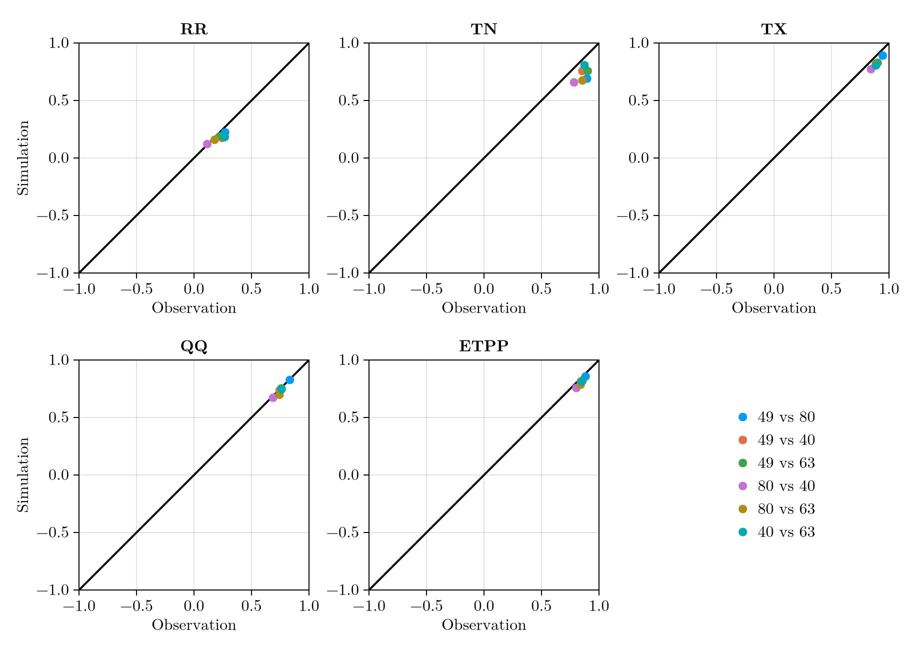
Correlations between weather variables at each sites.
var_markers = [:circle, :rect, :diamond, :utriangle, :dtriangle]
begin
plt_vars = Figure()
for station_1 in 1:D
row, col = fldmod1(station_1, 2)
ax = Axis(plt_vars[row, col], title=station_ndep[station_1], xlabel=(row == 2 ? "Observation" : ""), ylabel=(col == 1 ? "Simulation" : ""),
limits=(-1, 1, -1, 1), aspect=DataAspect(), width=300, height=300)
ablines!(ax, 0, 1, color=:black, linewidth=2)
df1 = dropmissing(data_stations[station_1])
p = 0 # pair of variables
for (i, var_1) in enumerate(vars)
for j in (i+1):length(vars)
var_2 = vars[j]
p += 1
@views mean_cor = mean(cor(dicts_simu[var_1][station_1, :, r], dicts_simu[var_2][station_1, :, r]) for r in 1:NSIMU)
scatter!(ax, Point2f(cor(df1[:, var_1], df1[:, var_2]), mean_cor), marker=var_markers[i], color=Cycled(p), markersize=14, label="$var_1 vs $var_2")
end
end
end
Legend(plt_vars[:, 3], content(plt_vars[1, 1]), framevisible=false)
resize_to_layout!(plt_vars)
plt_vars
end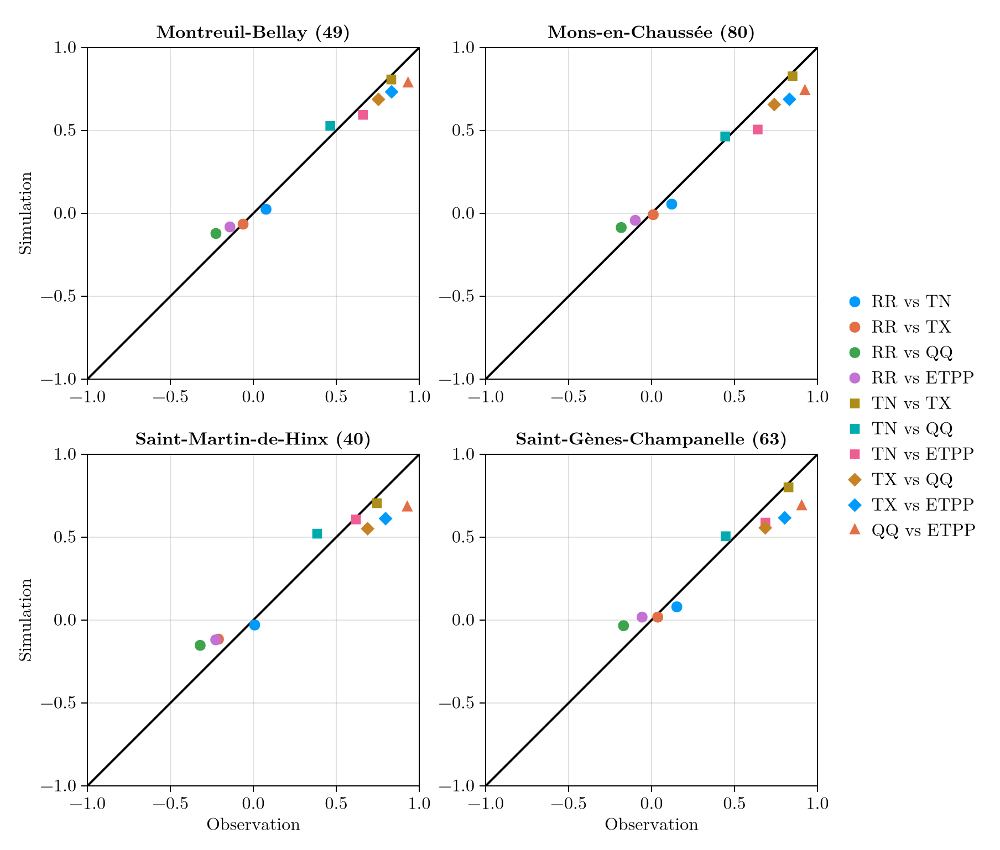
Univariate distributions
In this section we plot the marginal distribution of each variables at each sites.
Marginal Distributions
begin
plts_dist_univ = Dict()
xlabel_string = Dict(:RR => L"Rain ($\mathrm{m}\mathrm{m}$)", :TX => L"$T_{\mathrm{max}}$ (°C)", :TN => L"$T_{\mathrm{min}}$ (°C)", :QQ => L"Solar irradiance (MJ/$\mathrm{m}^2$)", :ETPP => L"Evapotranspiration ($\mathrm{m}\mathrm{m}/\mathrm{m}^2$)")
for XX in vars
fig = Figure()
for (j, df) in enumerate(data_stations)
row, col = fldmod1(j, 2)
ax = Axis(fig[row, col], title=station_ndep[j], xlabel=(row == 2 ? xlabel_string[XX] : ""), ylabel=(col == 1 ? "PDF" : ""),
yscale=(XX == :RR ? log10 : identity), width=350, height=250)
dist_j = XX == :RR ? [filter(!iszero, x) for x in eachcol(dicts_simu[XX][j, :, :])] : [x for x in eachcol(dicts_simu[XX][j, :, :])] # RR>0
dist_j_histo = XX == :RR ? filter(!iszero, dropmissing(df)[!, XX]) : dropmissing(df)[!, XX] # RR>0
VarMax = XX == :RR && j == 2 ? 100 : ceil(max(dist_j .|> maximum |> maximum, dist_j_histo |> maximum))
VarMin = floor(min(dist_j .|> minimum |> minimum, dist_j_histo |> minimum))
nbins = XX == :ETPP ? 40 : 80
BINS = range(VarMin, VarMax, length=nbins) # fixing the bins is very important to ensure fair comparison. Note that changing the bin step changes the aspect of the distributions.
errorlinehist!(ax, dist_j, bins=BINS, normalization=:pdf, errortype=:percentile, percentiles=[0, 100], centertype=:median, color=:red, secondarycolor=:grey, secondaryalpha=0.5)
errorlinehist!(ax, dist_j, bins=BINS, normalization=:pdf, errortype=:percentile, percentiles=[25, 75], centertype=:median, color=:red, secondaryalpha=0.6)
errorlinehist!(ax, [dist_j_histo], bins=BINS, normalization=:pdf, errortype=:percentile, color=:blue, linewidth=1.5, alpha=0.8)
XX == :RR && ylims!(ax, 1e-5, nothing)
XX == :RR && j == 2 && xlims!(ax, -1, 100) # some simulated RR are super extreme and messing with the xaxis
end
Legend(fig[:, 3], legend_simu..., framevisible=false)
resize_to_layout!(fig)
plts_dist_univ[XX] = fig
end
endRainfall RR
Note that on this plot our model predicts super high values at Mons-en-Chaussée, which are above 1000 mm. This indicates a bad fit of the seasonal rainfall amount model (probably in late summer). We crop the x-axis to only show a realistic range.
plts_dist_univ[:RR]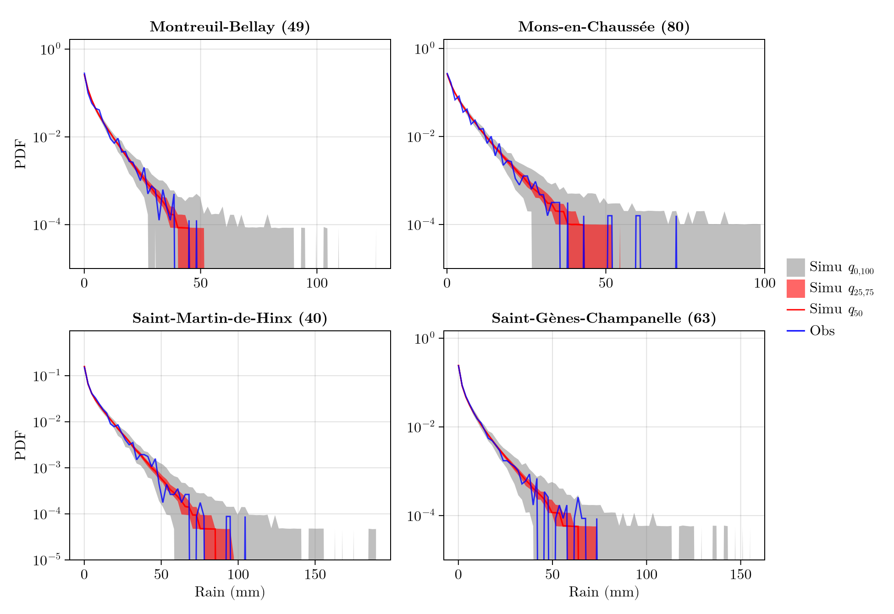
Temperature max TX
plts_dist_univ[:TX]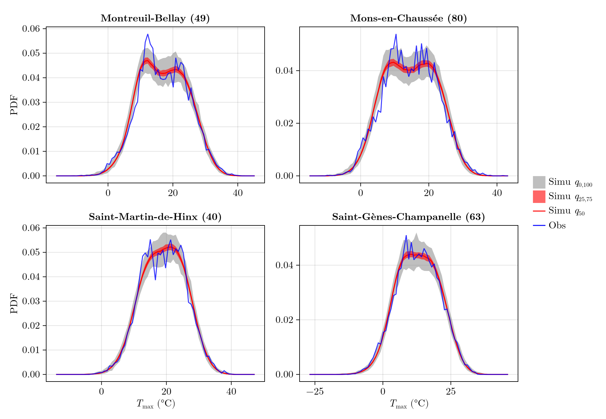
Temperature min TN
plts_dist_univ[:TN]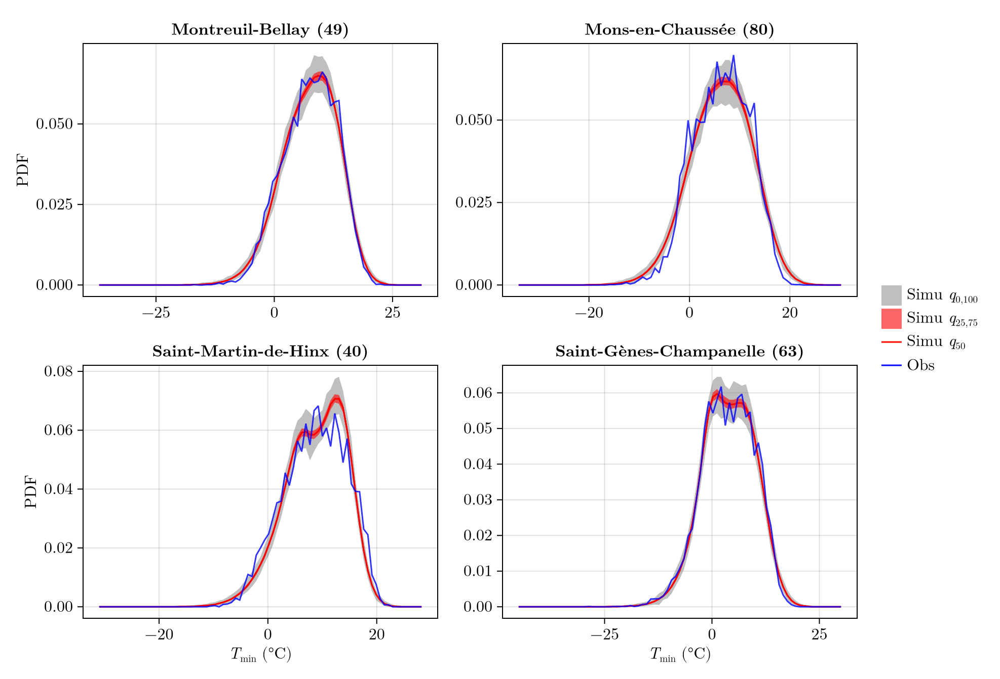
Solar irradiance QQ
plts_dist_univ[:QQ]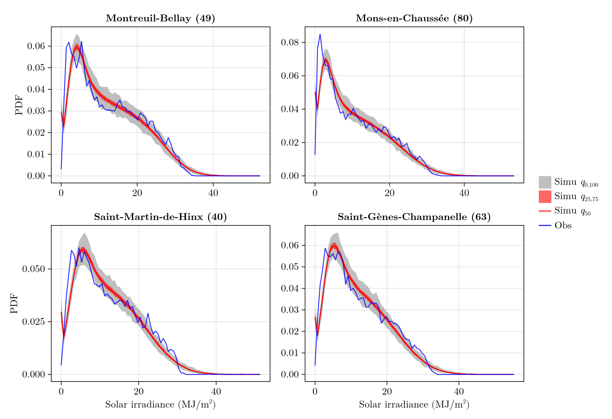
Evapotranspiration ETPP
plts_dist_univ[:ETPP]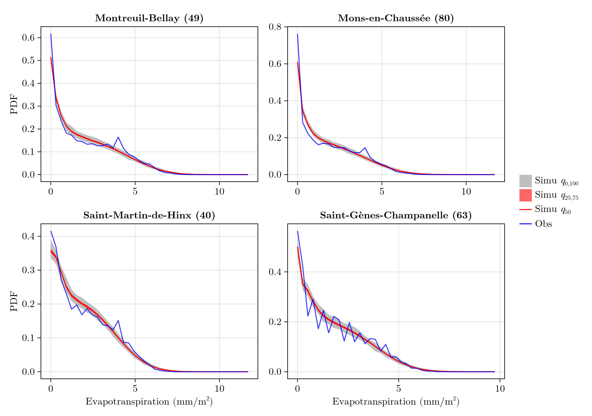
Monthly statistics
year_range = unique(year.(date_range))
idx_year = [findall(x -> year.(x) == m, date_range) for m in year_range]
idx_month = [findall(x -> month.(x) == m, date_range) for m in 1:12]
idx_all = [intersect(yea, mon) for yea in idx_year, mon in idx_month]
agg_fun(XX) = ifelse(XX == :RR, sum, mean)
month_rain_simu = Dict(key => [monthly_agg(xx[j, :, i], idx_all, agg_fun(key)) for j in 1:D, i in 1:NSIMU] for (key, xx) in dicts_simu)
month_rain_histo = Dict(key => [monthly_agg(@subset(df, :DATE .≥ Date(1986)), key, agg_fun(key)) for df in data_stations] for key in vars)
qs = [0.9, 0.5, 0.1]
@time "Plot monthly quantile" begin
plts_month = Dict()
ylabel_string = Dict(:RR => L"Cumulated Rain ($\mathrm{m}\mathrm{m}$)", :TX => L"$T_{\mathrm{max}}$ (°C)", :TN => L"$T_{\mathrm{min}}$ (°C)", :QQ => L"Solar irradiance (MJ/$\mathrm{m}^2$)", :ETPP => L"Evapotranspiration ($\mathrm{m}\mathrm{m}/\mathrm{m}^2$)")
for XX in vars
fig = Figure()
for j = 1:D
row, col = fldmod1(j, 2)
ax = Axis(fig[row, col], title=station_ndep[j], ylabel=(col == 1 ? ylabel_string[XX] : ""), xticks=(1:12, string.(first.(monthabbr.(1:12)))),
width=350, height=250)
for (α, per) in enumerate([[0, 100], [25, 75]])
for (cc, q) in enumerate(qs)
errorline!(ax, 1:12, [quantile(month_rain_simu[XX][j, i][:, m], q) for m in 1:12, i in 1:NSIMU], secondaryalpha=0.18 * α^2, centertype=:median, errortype=:percentile, percentiles=per, color=quantile_colors[cc])
end
end
for q in qs
scatterlines!(ax, 1:12, [quantile(skipmissing(month_rain_histo[XX][j][:, m]), q) for m in 1:12], color=:blue, linewidth=1.75, markersize=7)
end
XX == :RR && ylims!(ax, 0, nothing)
end
Legend(fig[:, 3], [quantile_band_legend.(quantile_colors)..., [LineElement(color=:blue), MarkerElement(color=:blue, marker=:circle, markersize=7)]],
[[L"Simu $q_{%$(Int(q*100))}$" for q in qs]..., "Obs"], framevisible=false)
resize_to_layout!(fig)
plts_month[XX] = fig
end
endPlot monthly quantile: 5.020360 seconds (13.18 M allocations: 974.148 MiB, 2.28% gc time, 64.39% compilation time: <1% of which was recompilation)Rainfall RR
plts_month[:RR]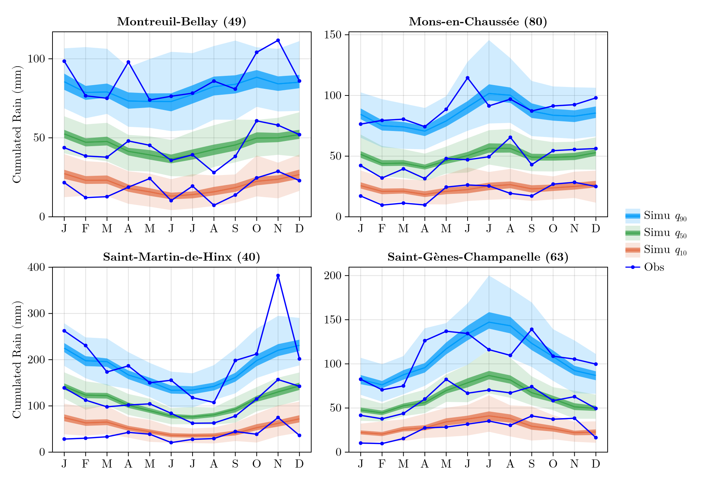
Temperature max TX
plts_month[:TX]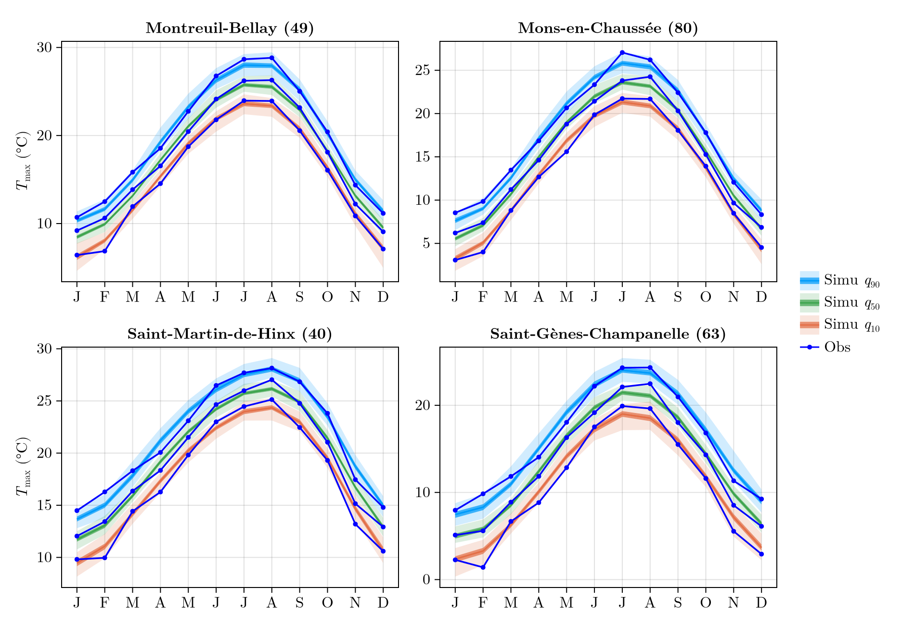
Temperature min TN
plts_month[:TN]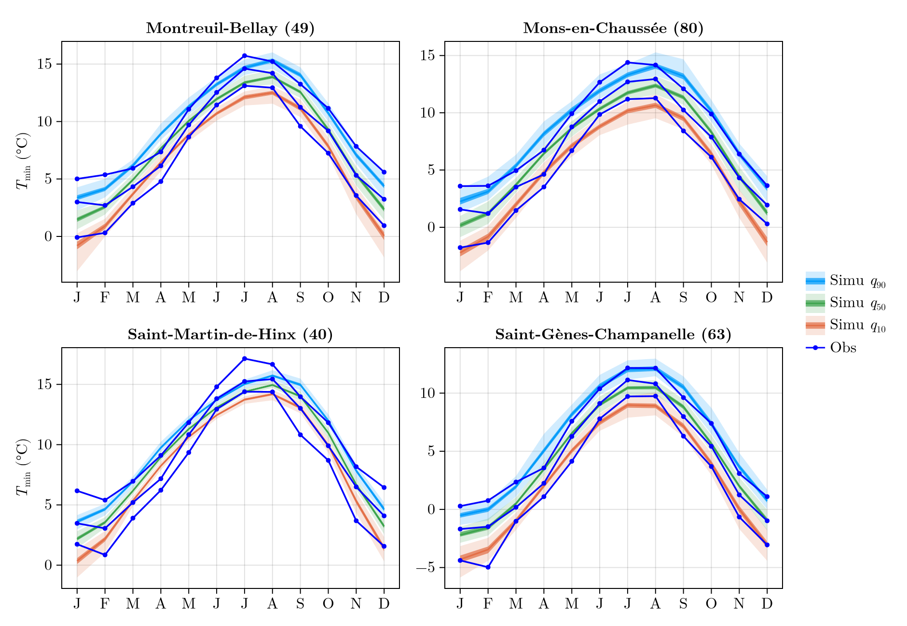
Solar irradiance QQ
plts_month[:QQ]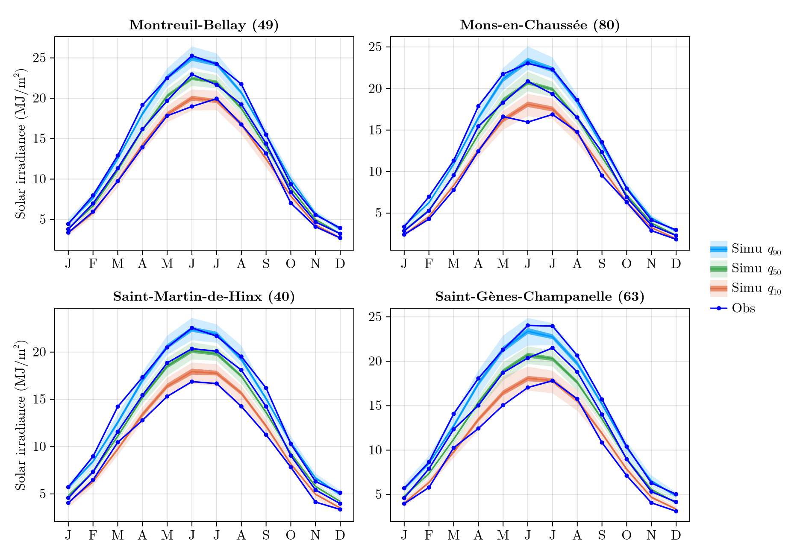
Evapotranspiration ETPP
plts_month[:ETPP]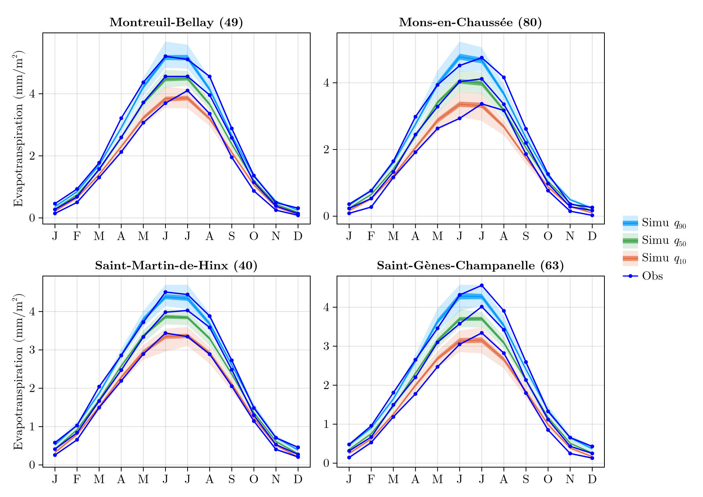
Stochastic Weather Generator + Crop model STICS
In this section, we demonstrate how stochastic weather simulations can serve as inputs for a crop model to study the climate sensitivity of a crop model. This is a proof of concept showing how SWG can be useful when combined with other models.
Specifically, we use the STICS crop model[STICS]. To download STICS, go to this page (in French...) and follow these instructions:
Register on the dedicated website, or log in if you already have an account.
You will receive an e-mail confirming the creation of your account.
Download files here after logging in
The download files will have
- STICS executable, here we will use the lower level one
stics_moduloand not the Java version which is slower. In this tutorial, we used the versionSTICS-10.0.0. - Parameter files of different crop.
Description
For this tutorial, we use the default STICS parameters for maize with the following modifications: no irrigation (to highlight the effect of hydric stress), pgrainmaxi = 0.35, and nbgrmin = 0, nbgrmax = 4500 (minimum and maximum number of fruits per m$^2$).
Typically, the final yield ranges between 0 and 15 t/ha and is highly dependent on rainfall and temperature.
Running STICS
In the file file_stics, we implemented functions to streamline calls to the STICS executable (either .exe or .sh), which can be obtained from the STICS downloads. For each simulation, the script updates the STICS weather files based on the input data frames (dfs_simus). It extracts the final yield (along with some other quantities not used here). If STICS encounters an error, the YIELD value is set to missing.
Since repeated calls to STICS are time-intensive, results are saved for reuse. Below, we show the executed code:
using Suppressor # to handle the STICS hard-printed output
file_for_stics_utilities = joinpath(pkgdir(StochasticWeatherGenerators), "examples", "utilities_stics.jl")
include(file_for_stics_utilities)
file_yield = joinpath(pkgdir(StochasticWeatherGenerators), "assets", "tuto_2", "results_yield.jld")"/home/runner/work/StochasticWeatherGenerators.jl/StochasticWeatherGenerators.jl/assets/tuto_2/results_yield.jld"stics_path = joinpath(STICS_PATH) # or stics_modulo for Linux
work_path = joinpath(WORK_PATH) # folder where all maize files are
# Start Julia with several threads, e.g. `julia -t 16`: each thread runs STICS in its own copy of `work_path`.
dfs_stics = [dfs_simus[i][j] for i in 1:300, j in 1:D]
@time res_stics = run_stics_mod_yield_parallel(dfs_stics, infos=100, stics_path=stics_path, work_path=work_path)
res_YIELDs = [r.YIELD for r in res_stics]
# 2091.759120 seconds (1.02 G allocations: 109.402 GiB, 1.01% gc time, 7 lock conflicts, 0.36% compilation time)
cd(@__DIR__)
JLD.save(file_yield, Dict("res_YIELDs" => res_YIELDs))res_YIELDs = JLD.load(file_yield)["res_YIELDs"]300×4 Matrix{Vector{Union{Missing, Float64}}}:
[6.46, 4.95, 4.91, 5.73, 3.84, 4.24, 5.25, 4.72, 10.52, 3.84 … 5.44, 8.99, 9.88, 6.54, 10.19, 9.85, 8.32, 5.89, 13.11, 6.44] … [1.58, 2.82, 2.76, 0.95, 3.18, 4.98, 1.84, 0.84, 0.49, 4.75 … 2.1, 1.2, 4.95, 3.11, 0.61, 1.94, 3.34, 6.01, 7.45, 2.83]
[7.1, 7.01, 6.0, 4.98, 6.9, 5.2, 11.11, 7.83, 8.68, 5.05 … 6.02, 3.31, 7.24, 3.8, 4.42, 11.53, 6.29, 5.21, 7.56, 3.35] [0.25, 0.94, 2.85, 2.23, 3.33, 1.58, 4.85, 1.93, 3.82, 1.41 … 2.59, 5.89, 0.36, 4.22, 4.14, 0.58, 7.8, 2.91, 2.71, 0.0]
[6.31, 8.54, 8.99, 5.37, 6.95, 9.43, 10.35, 5.92, 7.39, 6.97 … 4.46, 10.3, 6.99, 10.3, 10.92, 7.06, 5.47, 7.75, 3.4, 4.24] [1.51, 1.46, 0.55, 6.48, 3.43, 1.29, 4.93, 2.62, 3.32, 0.8 … 3.95, 1.26, 2.23, 0.0, 0.0, 2.29, 2.09, 1.52, 2.0, 4.03]
[8.23, 11.78, 4.2, 5.74, 6.87, 6.95, 6.8, 5.66, 4.07, 10.96 … 8.16, 5.62, 5.11, 9.51, 10.57, 5.03, 8.45, 7.78, 12.91, 8.7] [3.01, 2.29, 2.05, 1.37, 0.0, 2.37, 0.69, 3.5, 2.13, 1.45 … 0.13, 0.0, 3.72, 2.71, 3.29, 7.64, 1.04, 1.84, 4.01, 3.14]
[5.3, 10.49, 7.64, 7.56, 7.31, 9.0, 8.27, 5.04, 7.69, 8.43 … 7.54, 5.59, 9.72, 5.66, 9.67, 4.27, 4.28, 4.3, 3.87, 4.46] [1.35, 2.85, 0.86, 4.77, 1.43, 1.24, 3.26, 0.77, 5.54, 2.5 … 5.31, 3.18, 0.0, 0.54, 3.23, 0.88, 3.53, 1.91, 2.08, 1.48]
[8.22, 7.06, 5.58, 6.36, 6.54, 5.69, 8.25, 11.11, 5.29, 6.76 … 9.7, 4.16, 7.51, 8.68, 8.74, 9.53, 8.91, 6.06, 5.02, 3.85] … [2.71, 4.78, 1.07, 4.3, 0.0, 5.31, 2.62, 5.19, 1.79, 5.76 … 2.3, 2.77, 2.37, 1.71, 3.04, 0.48, 1.63, 1.78, 2.7, 1.91]
[5.39, 7.96, 8.05, 5.87, 8.14, 5.6, 11.37, 4.26, 9.8, 6.95 … 5.13, 4.8, 5.3, 7.7, 8.94, 10.69, 7.16, 10.73, 2.7, 5.29] [3.19, 2.48, 2.8, 6.61, 0.0, 4.37, 6.93, 2.74, 0.0, 6.28 … 2.56, 1.9, 0.0, 3.48, 0.94, 3.52, 0.0, 3.22, 1.01, 5.95]
[6.15, 9.6, 4.55, 7.94, 10.28, 3.89, 10.32, 11.35, 5.5, 9.32 … 5.72, 6.62, 7.74, 6.89, 11.57, 8.8, 11.99, 12.73, 7.74, 10.89] [1.85, 3.26, 2.01, 0.45, 0.0, 1.11, 3.27, 2.07, 0.0, 2.54 … 0.87, 0.38, 6.62, 2.83, 1.38, 1.58, 0.0, 2.54, 5.16, 0.46]
[7.91, 6.62, 5.97, 3.6, 11.67, 11.71, 4.69, 4.05, 3.67, 6.76 … 10.28, 4.81, 8.42, 10.28, 6.57, 5.45, 11.2, 5.17, 3.98, 6.35] [4.67, 4.32, 4.9, 0.0, 5.84, 0.89, 3.02, 9.14, 6.62, 3.01 … 2.66, 0.0, 7.0, 1.3, 3.45, 1.47, 5.62, 6.46, 2.31, 6.22]
[10.34, 4.1, 3.95, 10.56, 9.14, 4.64, 5.2, 5.93, 4.92, 9.65 … 4.2, 7.09, 6.91, 4.84, 6.12, 3.04, 6.43, 7.47, 5.48, 5.42] [7.78, 4.23, 1.61, 0.25, 0.54, 1.02, 4.95, 3.86, 1.76, 7.15 … 2.4, 4.49, 3.57, 6.37, 0.0, 1.07, 8.1, 0.0, 1.67, 3.38]
⋮ ⋱
[5.49, 10.63, 4.93, 6.89, 8.65, 7.01, 6.92, 5.2, 10.06, 11.08 … 4.9, 4.61, 11.82, 10.53, 4.81, 7.25, 4.24, 10.72, 8.3, 5.47] [4.23, 3.89, 3.36, 0.0, 3.3, 5.89, 4.19, 5.36, 1.23, 1.01 … 1.88, 0.0, 3.33, 1.36, 2.59, 0.0, 2.57, 2.47, 3.82, 3.94]
[10.39, 9.01, 6.88, 4.36, 9.04, 6.1, 3.58, 3.85, 4.05, 9.03 … 4.0, 5.66, 6.84, 7.27, 11.36, 9.57, 12.36, 10.87, 8.64, 10.82] [7.58, 0.37, 2.76, 0.0, 1.79, 3.32, 3.92, 7.32, 3.3, 3.73 … 5.13, 3.92, 5.75, 0.22, 4.79, 5.12, 2.42, 0.53, 2.1, 0.58]
[5.49, 4.38, 4.47, 10.51, 4.5, 6.84, 8.79, 6.52, 8.64, 4.47 … 6.72, 14.28, 5.34, 4.88, 6.95, 5.04, 7.41, 6.22, 10.21, 6.53] [0.14, 2.65, 0.0, 1.29, 4.07, 1.98, 0.0, 2.18, 3.47, 2.27 … 3.83, 5.72, 3.73, 0.0, 4.2, 5.02, 4.6, 0.0, 4.03, 3.6]
[4.15, 10.21, 3.81, 6.41, 6.51, 10.64, 6.7, 7.47, 5.85, 7.22 … 5.75, 5.67, 6.68, 6.57, 12.13, 3.95, 9.37, 9.66, 5.65, 5.36] [1.34, 0.71, 9.67, 0.0, 0.0, 0.29, 1.42, 3.25, 0.0, 1.47 … 3.65, 6.34, 1.61, 3.26, 2.61, 0.1, 2.5, 0.0, 1.92, 2.11]
[11.58, 7.31, 9.16, 9.05, 4.51, 7.75, 5.44, 14.12, 7.39, 11.35 … 7.94, 4.64, 9.31, 3.16, 5.63, 6.9, 4.71, 5.32, 3.9, 6.31] … [7.22, 0.19, 1.67, 0.12, 3.27, 6.51, 2.32, 0.0, 1.67, 0.62 … 3.47, 1.23, 0.06, 4.21, 6.01, 0.08, 1.43, 0.91, 5.47, 1.75]
[9.91, 7.38, 9.55, 10.14, 9.13, 6.3, 12.69, 7.57, 7.53, 8.44 … 2.76, 5.02, 8.19, 4.33, 4.26, 5.58, 8.02, 11.29, 6.33, 6.76] [2.36, 1.91, 0.0, 4.38, 0.0, 1.84, 2.97, 4.15, 0.16, 2.23 … 6.05, 5.83, 1.62, 1.54, 1.71, 7.75, 1.89, 1.81, 2.62, 0.12]
[8.83, 4.99, 8.87, 4.38, 4.24, 7.54, 11.14, 6.47, 5.56, 4.43 … 5.83, 8.03, 8.88, 5.93, 4.07, 8.94, 6.05, 8.23, 5.35, 9.75] [1.46, 0.06, 3.82, 0.0, 3.15, 2.37, 3.71, 1.55, 1.6, 2.94 … 1.52, 8.57, 3.19, 3.71, 3.26, 0.39, 1.03, 1.96, 5.53, 0.56]
[10.0, 4.78, 8.07, 6.33, 12.2, 12.47, 6.32, 7.33, 3.8, 8.76 … 6.51, 5.43, 4.31, 8.29, 7.88, 7.38, 8.98, 7.75, 8.78, 6.28] [0.0, 7.23, 9.37, 2.28, 4.24, 2.67, 4.81, 3.62, 1.14, 3.7 … 6.02, 2.18, 5.94, 0.0, 1.1, 1.1, 1.7, 1.69, 0.0, 1.6]
[5.23, 7.92, 4.44, 10.07, 6.34, 3.51, 5.31, 8.98, 5.98, 4.69 … 8.84, 8.75, 7.98, 4.62, 6.55, 4.87, 6.4, 6.42, 8.79, 8.95] [3.74, 1.21, 0.0, 9.65, 0.8, 2.12, 2.26, 6.02, 5.35, 1.54 … 3.62, 1.61, 1.85, 0.31, 3.31, 4.48, 0.08, 2.36, 8.91, 1.14]In the GenHack 3 Hackathon, the participants were given one file per station with $10^5$ year of annual yield. The validation set was composed of $10^6$ years. Here, we generate 300 realizations of 50 year crop yield distributions (to access uncertainty).
Yield distributions with uncertainty
The following plot shows the typical distribution of maize yield at four location over a 50-year span. We added the envelope of these distributions to highlight uncertainty. Each location has a very different weather (see previous sections).
begin
plts_dist_yield = Figure()
for j in 1:D
row, col = fldmod1(j, 2)
ax = Axis(plts_dist_yield[row, col], title=station_ndep[j], xlabel=(row == 2 ? "YIELD (t/ha)" : ""), ylabel=(col == 1 ? "PDF" : ""),
width=350, height=250)
dist_j = Vector{Vector{Float64}}(filter.(!ismissing, res_YIELDs[:, j]))
VarMax = ceil(dist_j .|> maximum |> maximum)
VarMin = floor(dist_j .|> minimum |> minimum)
BINS = range(VarMin, VarMax, length=16) # fixing the bins is very important to ensure fair comparison. Note that changing the bin step changes the aspect of the distributions.
errorlinehist!(ax, dist_j, bins=BINS, normalization=:pdf, errortype=:percentile, percentiles=[0, 100], centertype=:median, color=:red, secondarycolor=:gray, secondaryalpha=0.5)
errorlinehist!(ax, dist_j, bins=BINS, normalization=:pdf, errortype=:percentile, percentiles=[25, 75], centertype=:median, color=:red, secondaryalpha=0.6)
xlims!(ax, 0, 16)
end
Legend(plts_dist_yield[:, 3], legend_simu[1][1:2], legend_simu[2][1:2], framevisible=false)
resize_to_layout!(plts_dist_yield)
plts_dist_yield
end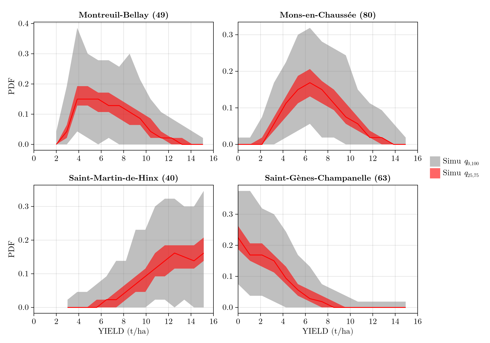
Sensitivity Analysis of Maize to Rainfall
To determine which rainfall period between April and October has the most significant influence on maize yield, the growing season is segmented into nine distinct periods.
week_date = (date_begin=Date(1996, 4, 27), date_end=Date(1996, 10, 27), N_period=4)
groups = chunky(Dates.value(week_date.date_end - week_date.date_begin) + 1, week_date.N_period)
dfs_stat = [[stats_fortnightly(dfsim, week_date, years) for dfsim in dfs_simus[i]] for i in axes(res_YIELDs, 1)]
for i in eachindex(dfs_stat)
for (j, df) in enumerate(dfs_stat[i])
@transform!(df, :YIELD = res_YIELDs[i, j])
end
end
dfs_stat[1][1][1:10, :] # show how it looks like at one station| Row | YEAR | MEAN_TX_1 | MEAN_TX_2 | MEAN_TX_3 | MEAN_TX_4 | MEAN_RR_1 | MEAN_RR_2 | MEAN_RR_3 | MEAN_RR_4 | YIELD |
|---|---|---|---|---|---|---|---|---|---|---|
| Int64 | Float64 | Float64 | Float64 | Float64 | Float64 | Float64 | Float64 | Float64 | Float64? | |
| 1 | 1986 | 19.0861 | 24.3835 | 22.6414 | 19.5915 | 2.2178 | 0.97617 | 2.33258 | 2.53511 | 6.46 |
| 2 | 1987 | 18.5709 | 25.3914 | 25.1283 | 20.0749 | 1.30827 | 1.16466 | 0.541079 | 1.57704 | 4.95 |
| 3 | 1988 | 23.3145 | 25.7444 | 25.9291 | 20.3355 | 0.823124 | 1.03749 | 0.760197 | 1.0714 | 4.91 |
| 4 | 1989 | 21.722 | 23.595 | 23.3493 | 19.6828 | 1.79241 | 1.23675 | 1.25553 | 1.62258 | 5.73 |
| 5 | 1990 | 20.356 | 25.9951 | 27.104 | 20.5814 | 1.86966 | 0.507407 | 0.345606 | 2.12233 | 3.84 |
| 6 | 1991 | 22.0923 | 23.4489 | 24.4106 | 19.4617 | 1.09118 | 0.694941 | 2.60524 | 2.5317 | 4.24 |
| 7 | 1992 | 21.2767 | 24.7681 | 23.7879 | 20.8452 | 1.18169 | 0.485881 | 2.11939 | 0.762675 | 5.25 |
| 8 | 1993 | 22.3146 | 24.1018 | 25.6348 | 19.8117 | 1.13916 | 0.813757 | 0.278242 | 0.949206 | 4.72 |
| 9 | 1994 | 23.024 | 26.9029 | 24.014 | 18.298 | 1.32751 | 1.98002 | 1.91308 | 2.73794 | 10.52 |
| 10 | 1995 | 23.0336 | 26.326 | 22.3361 | 22.1661 | 1.52457 | 0.745016 | 2.81052 | 0.415501 | 3.84 |
In the GenHack 3 Hackathon, the number of period was 9, so that there were $9+9=18$ weather variables. Instead of being named MEAN_TX_j and MEAN_RR_j with j going from 1 to 9, there were named W_i with i going from 1 to 18.
For each period, we calculate the mean rainfall, both conditionally (blue) and unconditionally (orange), on final yields exceeding the median. Each distribution is displayed along with its interquartile range.
begin
j = 1 # station number
dfi = [dropmissing(dfs_stat[i][j]) for i in eachindex(dfs_stat)]
df_sub = [@subset(df, :YIELD .> quantile(:YIELD, 0.5)) for df in dfi]
plt_sensitivity = Figure()
for i in 1:week_date.N_period
row, col = fldmod1(i, 2)
period_range = period_range_func(groups[i])
ax = Axis(plt_sensitivity[row, col], title="$(day(period_range[1])) $(monthabbr(period_range[1])) - $(day(period_range[2])) $(monthabbr(period_range[2]))",
xlabel=(row == 2 ? "Rain (mm/period)" : ""), ylabel=(col == 1 ? "PDF" : ""), width=350, height=250)
dist_j = [dfi[ii][:, Symbol("MEAN_RR_$i")] for ii in eachindex(dfi)]
dist_j_sub = [df_sub[ii][:, Symbol("MEAN_RR_$i")] for ii in eachindex(dfi)]
VarMax = ceil(max(dist_j .|> maximum |> maximum, dist_j_sub .|> maximum |> maximum))
VarMin = floor(min(dist_j .|> minimum |> minimum, dist_j_sub .|> minimum |> minimum))
BINS = range(VarMin, VarMax, length=20) # fixing the bins is very important to ensure fair comparison. Note that changing the bin step changes the aspect of the distributions.
errorlinehist!(ax, dist_j, bins=BINS, normalization=:pdf, errortype=:percentile, percentiles=[25, 75], centertype=:median, color=plots_colors[2], secondaryalpha=0.1, linewidth=2, label=L"R")
errorlinehist!(ax, dist_j_sub, bins=BINS, normalization=:pdf, errortype=:percentile, percentiles=[25, 75], centertype=:median, color=plots_colors[1], secondaryalpha=0.1, linewidth=2, label=L"R \mid (\mathrm{Yield} > \mathrm{median})")
vlines!(ax, mean.(dist_j) |> mean, color=plots_colors[2], linestyle=:dot, linewidth=2)
vlines!(ax, mean.(dist_j_sub) |> mean, color=plots_colors[1], linestyle=:dot, linewidth=2)
end
Legend(plt_sensitivity[:, 3], content(plt_sensitivity[1, 1]), framevisible=false)
Label(plt_sensitivity[0, 1:2], station_ndep[j], font=:bold)
resize_to_layout!(plt_sensitivity)
plt_sensitivity
end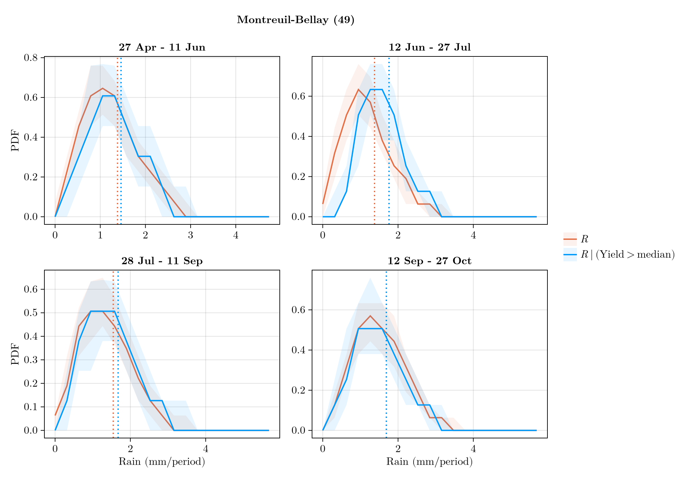
For the selected station, the most critical period is from June 12 to July 27, as evidenced by the significant difference between the two distributions. Specifically, the mean rainfall, when conditioned on a high yield, is approximately 20% higher during this period. In contrast, for the other periods, the mean rainfall remains nearly identical, indicating a much lower sensitivity.
Yield vs the Weather Time series
This section shows how the yield is related to the weather time series at a given station. Bellow is the code to generate the GIF at the beginning of this tutorial.
idx_simu = 153 # simulation number, 1 to 300
idx_station = 1 # station number, 1 to 4
cs = cgrad([:red, :green], 10, categorical = true)
ecdf_station = ecdf(Vector{Float64}(filter(!ismissing, res_YIELDs[:, idx_station] |> stack |> vec)))
fig_gif = Figure(size = (800, 900))
record(fig_gif, "yield_vs_TS_station_$(idx_station)_simu_$(idx_simu).gif", eachindex(years); framerate = 1) do i_year
YE = years[i_year]
empty!(fig_gif)
df_ex_gif = @subset(dfs_simus[idx_simu][idx_station], Date(YE, 4, 27) .≤ :DATE .≤ Date(YE, 10, 27))
yy = res_YIELDs[idx_simu, idx_station][i_year]
Label(fig_gif[1, 1], ismissing(yy) ? "Maize Yield = ERROR" : "Maize Yield = $(yy) t/ha", color = ismissing(yy) ? :black : cs[ceil(Int, ecdf_station(yy) * 10)], fontsize = 20, font = :bold, tellwidth = false)
Label(fig_gif[2, 1], "$(station_ndep[idx_station]) - $(YE)", fontsize = 18, tellwidth = false)
axs = [Axis(fig_gif[i+2, 1], ylabel = ylabel, limits = (nothing, ylim)) for (i, (ylabel, ylim)) in enumerate(zip(["mm", "°C", L"MJ/m$^2$", L"mm/m$^2$"], [(-0.01, 40), (2, 40), (-0.01, 45), (-0.01, 10)]))]
lines!(axs[1], df_ex_gif.DATE, df_ex_gif.RR, label = "RR", color = :blue, linewidth = 1.5)
for d in (Date(YE, 6, 12), Date(YE, 7, 27)) # key period for maize
lines!(axs[1], [d, d], [-0.01, 40], color = :black, linestyle = :dash)
end
lines!(axs[2], df_ex_gif.DATE, df_ex_gif.TX, label = "TX", color = plots_colors[2], linewidth = 1.5)
lines!(axs[2], df_ex_gif.DATE, df_ex_gif.TN, label = "TN", color = plots_colors[1], linewidth = 1.5)
lines!(axs[3], df_ex_gif.DATE, df_ex_gif.QQ, label = "QQ", color = plots_colors[4], linewidth = 1.5)
lines!(axs[4], df_ex_gif.DATE, df_ex_gif.ETPP, label = "ETPP", color = plots_colors[3], linewidth = 1.5)
axislegend.(axs, position = :lt)
linkxaxes!(axs...)
endReproducibility
import InteractiveUtils
InteractiveUtils.versioninfo()Julia Version 1.13.4
Commit c1ac32ab733 (2026-11-13 17:30 UTC)
Build Info:
Official https://julialang.org release
Platform Info:
OS: Linux (x86_64-linux-gnu)
CPU: 4 × AMD EPYC 9V45 96-Core Processor
WORD_SIZE: 64
LLVM: libLLVM-20.1.8 (ORCJIT, znver5)
GC: Built with stock GC
Threads: 4 default, 1 interactive, 4 GC (on 4 virtual cores)
Environment:
JULIA_DEBUG = DocumenterPackage list and version
import Pkg;
Pkg.status();Status `~/work/StochasticWeatherGenerators.jl/StochasticWeatherGenerators.jl/docs/Project.toml`
⌃ [336ed68f] CSV v0.10.17
[13f3f980] CairoMakie v0.15.17
[a93c6f00] DataFrames v1.8.3
[1313f7d8] DataFramesMeta v0.15.6
[8bb1440f] DelimitedFiles v1.9.1
⌃ [31c24e10] Distributions v0.25.134
[e30172f5] Documenter v1.20.0
[daee34ce] DocumenterCitations v1.5.0
[f6369f11] ForwardDiff v1.5.0
[db073c08] GeoMakie v0.7.18
[4138dd39] JLD v0.13.5
[b964fa9f] LaTeXStrings v1.4.1
[d3d80556] LineSearches v7.8.2
[98b081ad] Literate v2.21.1
[436b0209] NaturalEarth v0.1.1
[7f7a1694] Optimization v5.9.1
[36348300] OptimizationOptimJL v0.4.23
⌅ [bac558e1] OrderedCollections v1.8.2
[727e6d20] SimpleNonlinearSolve v2.14.6
[3d8e1505] SmoothPeriodicStatsModels v4.1.0
[2913bbd2] StatsBase v0.34.14
[3eadb0b9] StochasticWeatherGenerators v3.0.0 `.`
[fd094767] Suppressor v0.2.8
[ade2ca70] Dates v1.11.0
[b77e0a4c] InteractiveUtils v1.11.0
[9a3f8284] Random v1.11.0
Info Packages marked with ⌃ and ⌅ have new versions available. Those with ⌃ may be upgradable, but those with ⌅ are restricted by compatibility constraints from upgrading. To see why use `status --outdated`This page was generated using Literate.jl.
- ErrorNote that, for some simulations with STICS an error was thrown (which I cannot explain at the moment and might be due to a STICS issue).
- climatikDelannoy, David; Maury, Olivier; Décome, Jérémie, 2022, “CLIMATIK : système d’information pour les données du réseau agroclimatique INRAE”, https://doi.org/10.57745/AJNXEN, Recherche Data Gouv, V1
- STICSBrisson et al. (2003). An overview of the crop model STICS. European Journal of agronomy, 18(3-4), 309-332.